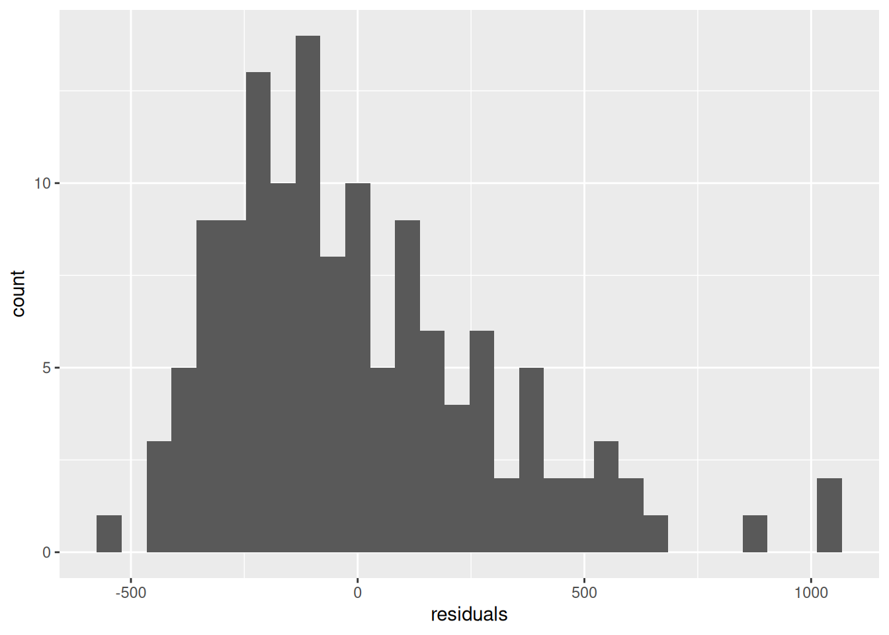

df <- read.csv("ceosal.csv")
cor(df$salary, df$sales)[1] 0.4464905
Chief Executive Officers (CEOs) of large companies often earn extremely large salaries, often hundreds of times the salaries of the company’s regular employees. These relative pay differences are often criticized. You are tasked with understanding which and how much different factors impact CEO compensation. You collect data on a random sample of n=132 CEOs from different companies in the year 1990. Your dataset contains the following variables:
salary: Annual CEO compensation in 1990, measured in thousands of dollars ($1000s).age: Age of CEO in years.college: Dummy variable which equals 1 if the CEO attended college and 0 otherwise.grad: Dummy variable which equals 1 if the CEO attended graduate school (post-graduate education, e.g. an MBA) and 0 otherwise.comten: Number of years the CEO has worked with the company.ceoten: Number of years the CEO has been the CEO in the company.sales: The total sales of the company in 1990, measured in millions of dollars ($1,000,000s).profits: The total profits of the company in 1990, measured in millions of dollars ($1,000,000s).mktval: The total market value of the company at the end of 1990, measured in millions of dollars ($1,000,000s).The dataset can be downloaded by clicking the following link: ceosal.csv
In the questions that follow, pay particular attention to the units of the variables. The salaries are measured thousands of dollars and sales, profits and market value are measured in millions of dollars.
Report the sample correlation coefficient between salary and sales.
df <- read.csv("ceosal.csv")
cor(df$salary, df$sales)[1] 0.4464905Answer: 0.4464905
The sample correlation coefficient between salary and college is -0.200. Choose the answer below which best represents the interpretation of this correlation coefficient.
Answer: There is a weak negative linear relationship between CEO salary and having a college degree.
Report the sample covariance between salary and ceoten.
cov(df$salary, df$ceoten)[1] 387.2734Answer: 387.2734
Estimate a simple linear regression model explaining salary with sales. If you estimated the model correctly, your estimated constant term should be 542.063.
Use this model to answer the following questions.
m1 <- lm(salary ~ sales, data = df)
summary(m1)
Call:
lm(formula = salary ~ sales, data = df)
Residuals:
Min 1Q Median 3Q Max
-528.80 -211.70 -64.71 151.51 1059.87
Coefficients:
Estimate Std. Error t value Pr(>|t|)
(Intercept) 542.06347 39.27227 13.803 < 2e-16 ***
sales 0.12364 0.02173 5.689 0.0000000805 ***
---
Signif. codes: 0 '***' 0.001 '**' 0.01 '*' 0.05 '.' 0.1 ' ' 1
Residual standard error: 303.4 on 130 degrees of freedom
Multiple R-squared: 0.1994, Adjusted R-squared: 0.1932
F-statistic: 32.37 on 1 and 130 DF, p-value: 0.00000008047Report the sample regression slope.
Answer: 0.1236
In a company with $1m more in sales, how much more do we expect CEOs in that company to earn (in dollars)?
Note: Be careful with the units for both sales and CEO salary.
Answer: 123.641
Explanation: The question refers to a one-unit increase in the x variable, so no adjustment is needed. The y variable is measured in in thousands of dollars, so we need to multiply b_1 by 1,000 to convert to dollars.
If we take the estimate of the regression intercept at face value, which of the options below best describes the interpretation of that estimate?
Answer: In companies with zero sales, CEOs on average earn $542,063.00 per year.
Explanation: The estimate of \beta_0 is the estimate of \mathbb{E}[Y_i|x_i=0]. The y-data are measured in thousands of dollars, so we need to multiply b_0 by 1,000.
The estimate from the previous question is unreliable. This is because:
Answer: We do not observe any company with zero sales, or close to zero sales.
Explanation: We can only get a reliable estimate of \mathbb{E}[Y_i|x_i=0] when we observe x-data at or near zero. We can check this with:
summary(df$sales) Min. 1st Qu. Median Mean 3rd Qu. Max.
29.0 468.2 925.0 1337.7 1925.0 5300.0 The smallest value of sales is 29 million dollars, very far from zero.
Note: This question involves inspecting the normality of the residuals with a plot, which we no longer do in this course starting in 2024.
Create some plots to visually inspect the model assumptions. Of the 4 options below, 3 contain clearly incorrect statements. Use your plots to choose the correct statement out of the 4 options:
Answer: Comparing a histogram of the residuals against a fitted normal curve we observe a significant deviation, as the residuals are positively skewed. Therefore the normality assumption is violated.
Explanation:
df$residuals <- m1$residuals
library(ggplot2)
# Check for distribution of residuals:
ggplot(df, aes(residuals)) + geom_histogram()`stat_bin()` using `bins = 30`. Pick better value with `binwidth`.
Indeed there are considerably more large positive values than large negative values, indicating the residuals are skewed to the right.
Run a regression of the squared residuals against sales to formally test the homoskedasticity assumption. Use a 5% level for the test.
What is the null hypothesis? Choose one of the following options:
What is the p-value of the test?
What is the conclusion of the test? Choose one of the following options:
Answer:
df$e2 <- m1$residuals^2
summary(lm(e2 ~ sales, data = df))
Call:
lm(formula = e2 ~ sales, data = df)
Residuals:
Min 1Q Median 3Q Max
-102552 -80708 -52343 10080 1019585
Coefficients:
Estimate Std. Error t value Pr(>|t|)
(Intercept) 106416.39 21226.14 5.013 0.00000171 ***
sales -11.79 11.75 -1.004 0.317
---
Signif. codes: 0 '***' 0.001 '**' 0.01 '*' 0.05 '.' 0.1 ' ' 1
Residual standard error: 164000 on 130 degrees of freedom
Multiple R-squared: 0.007695, Adjusted R-squared: 6.238e-05
F-statistic: 1.008 on 1 and 130 DF, p-value: 0.3172The p-value is 0.317206. - Conclusion: There is not sufficient evidence to conclude that there is heteroskedasticity.
Estimate a simple linear regression model explaining salary with profits. If you estimated the model correctly, your estimated constant term should be 588.959
Use this model to answer the following questions.
m2 <- lm(salary ~ profits, data = df)
summary(m2)
Call:
lm(formula = salary ~ profits, data = df)
Residuals:
Min 1Q Median 3Q Max
-593.5 -236.0 -55.9 212.6 998.3
Coefficients:
Estimate Std. Error t value Pr(>|t|)
(Intercept) 588.9594 41.0908 14.333 < 2e-16 ***
profits 1.5841 0.4033 3.928 0.000138 ***
---
Signif. codes: 0 '***' 0.001 '**' 0.01 '*' 0.05 '.' 0.1 ' ' 1
Residual standard error: 320.6 on 130 degrees of freedom
Multiple R-squared: 0.1061, Adjusted R-squared: 0.09922
F-statistic: 15.43 on 1 and 130 DF, p-value: 0.0001383Use the model to test the following claim:
“If a CEO can increase a company’s profits by $1m, on average they get an increase in salary of more than $1,000.”
Use a 5% significance level for your test.
What is the null hypothesis? \beta_1 </\leq/>/\geq/=/\neq \underline{\hspace{20mm}} (choose one comparison operator and fill in a value in the blank).
What is the alternative hypothesis? \beta_1 </\leq/>/\geq/=/\neq \underline{\hspace{20mm}} (choose one comparison operator and fill in a value in the blank).
Under the null hypothesis, the test statistic T follows a t distribution with how many degrees of freedom? \underline{\hspace{20mm}}
What is the value of the test statistic? \underline{\hspace{20mm}}
What is the associated p-value? \underline{\hspace{20mm}}
What is your conclusion? Choose an option below:
Answers:
m2$df.residual[1] 130b_1 <- coef(summary(m2))["profits", "Estimate"]
s_b_1 <- coef(summary(m2))["profits", "Std. Error"]
t <- (b_1 - 1) / s_b_1
t[1] 1.4483731 - pt(t, m2$df.residual)[1] 0.0749602Explanation: The interpretation of b_1 is that a one million dollar increase in profits leads to a $1,584 increase in salary on average. The claim is asking if this is larger than $1,000 in the population, thus if \beta_1>1. This is the alternative hypothesis, and we use the opposite for the null. The p-value is above the significance level so we fail to reject H_0. There is not sufficient evidence for the claim.
Construct a 95% confidence interval for the coefficient on profits. Report the lower bound and upper bound of this interval below:
confint(m2, level = 0.95) 2.5 % 97.5 %
(Intercept) 507.6661567 670.252598
profits 0.7862601 2.381932The lower bound is 0.7862601 and the upper bound is 2.381932.
The 95% confidence interval for the intercept is [507.666, 670.253].
Insert the blanks in the interpretation of this confidence interval below. Take note of the units of the variables when writing your answer.
We are \underline{\hspace{20mm}}% confident that the population mean salary of CEOs in companies with profits of \underline{\hspace{20mm}} is between \$\underline{\hspace{20mm}} and \$\underline{\hspace{20mm}}
Write your answer in dollars, taking note that the salary variable is measured in thousands of dollars.
Answer: We are 95% confident that the population mean salary of CEOs in companies with profits of $0 is between $507,666 and $670,253.
Create an interaction term called gradsales which multiplies the variables grad and sales by each other. Then use this to estimate a regression model explaining salary with the following three variables:
gradsalesgradsalesIf you estimated the model correctly, your estimated model intercept should be 614.916.
m3 <- lm(salary ~ grad * sales, data = df)
summary(m3)
Call:
lm(formula = salary ~ grad * sales, data = df)
Residuals:
Min 1Q Median 3Q Max
-488.09 -207.75 -69.06 150.45 1114.10
Coefficients:
Estimate Std. Error t value Pr(>|t|)
(Intercept) 614.91624 56.20435 10.941 <2e-16 ***
grad -135.08388 78.38940 -1.723 0.0873 .
sales 0.07594 0.03343 2.271 0.0248 *
grad:sales 0.08296 0.04383 1.893 0.0606 .
---
Signif. codes: 0 '***' 0.001 '**' 0.01 '*' 0.05 '.' 0.1 ' ' 1
Residual standard error: 301.3 on 128 degrees of freedom
Multiple R-squared: 0.2225, Adjusted R-squared: 0.2043
F-statistic: 12.21 on 3 and 128 DF, p-value: 0.0000004449For companies with $1m more in sales, on average CEOs without graduate school education earn how much more (in dollars)?
Answer: $75.94.
Explanation: The model is: \mathbb{E}[Y_i|grad_i,sales_i]=\beta_0 + \beta_1 grad_i + \beta_2 sales_i + \beta_3 grad_i sales_i When grad_i=0, the model becomes: \mathbb{E}[Y_i|grad_i=0,sales_i]=\beta_0 + \beta_1 \times 0 + \beta_2 sales_i + \beta_3 \times 0 \times sales_i= \beta_0 + \beta_2 sales_i Increasing sales by one unit: \mathbb{E}[Y_i|grad_i=0,sales_i+1]=\beta_0 + \beta_2 \left(sales_i+1\right)=\beta_0 + \beta_2 sales_i + \beta_2 Taking differences: \mathbb{E}[Y_i|grad_i=0,sales_i+1]- \mathbb{E}[Y_i|grad_i=0,sales_i]=\beta_2 Thus \beta_2 is the expected change in salary (in thousands) when sales increases by one unit (one million) for CEOs that didn’t go to graduate school.
Because sales is in millions and salary is in thousands, a one-dollar increase in sales leads to a:
b_2 \times \frac{1000000}{1000}=0.07594\times 1000=75.94 dollar increase in salary.
For companies with $1m more in sales, on average CEOs with graduate school education earn how much more (in dollars)?
Answer: $158.89.
Explanation: The model is: \mathbb{E}[Y_i|grad_i,sales_i]=\beta_0 + \beta_1 grad_i + \beta_2 sales_i + \beta_3 grad_i sales_i When grad_i=1, the model becomes: \mathbb{E}[Y_i|grad_i=1,sales_i]=\beta_0 + \beta_1 + \beta_2 sales_i + \beta_3 sales_i=\beta_0+\beta_1+\left(\beta_2+\beta_3\right)sales_i Increasing sales by 1 unit: \mathbb{E}[Y_i|grad_i=1,sales_i+1]=\beta_0 + \beta_1 + \beta_2 sales_i + \beta_3 sales_i=\beta_0+\beta_1+\left(\beta_2+\beta_3\right)\left(sales_i+1\right) Taking differences: \mathbb{E}[Y_i|grad_i=1,sales_i+1]-\mathbb{E}[Y_i|grad_i=1,sales_i]=\beta_2+\beta_3 Therefore \beta_2+\beta_3 represents the expected change in salary (in thousands) when sales increases by one unit for CEOs that did go to graduate school.
Because sales is in millions and salary is in thousands, a one-dollar increase in sales leads to a:
\left(b_2+b_3\right) \times \frac{1000000}{1000}=\left(0.07594+0.08296\right)\times 1000=158.89 dollar increase in salary.
We could also have done this calculation in R the following way:
(coef(m3)[3] + coef(m3)[4]) * 1000 sales
158.8949 Estimate a simple linear regression model explaining salary with the following 4 variables:
salesmktvalcomtenceotenIf you estimated the model correctly, your estimate of the intercept should be 490.217.
m4 <- lm(salary ~ sales + mktval + comten + ceoten, data = df)
summary(m4)
Call:
lm(formula = salary ~ sales + mktval + comten + ceoten, data = df)
Residuals:
Min 1Q Median 3Q Max
-552.9 -182.9 -52.3 133.6 1043.2
Coefficients:
Estimate Std. Error t value Pr(>|t|)
(Intercept) 490.21676 61.89257 7.920 0.00000000000103 ***
sales 0.10979 0.02359 4.655 0.00000803914634 ***
mktval 0.04888 0.02234 2.188 0.03047 *
comten -4.31799 2.19947 -1.963 0.05181 .
ceoten 11.89457 3.76740 3.157 0.00199 **
---
Signif. codes: 0 '***' 0.001 '**' 0.01 '*' 0.05 '.' 0.1 ' ' 1
Residual standard error: 290 on 127 degrees of freedom
Multiple R-squared: 0.2852, Adjusted R-squared: 0.2627
F-statistic: 12.67 on 4 and 127 DF, p-value: 0.00000001052Which variables are individually significant at the 5% level?
Answer: Significant: sales, mktval, ceoten. Insignificant: comten.
Explanation: We look at the p-values in the model summary table. If the p-value for a variable is less than 0.05 it is significant, otherwise it is insignificant.
What proportion of the variation in the data on salary is left unexplained by your model? Note that proportions are between 0 and 1, so your answer should be between 0 and 1.
1 - summary(m4)$r.squared[1] 0.7147985Answer: 0.714799.
Explanation: The R^2 gives the proportion of the y-data that is explained by the variation in the explanatory variables. From the summary table we see it is 0.2852. To get the proportion that is unexplained, we subtract this from 1.
Perform an appropriate hypothesis test to test the usefulness of the model. Use a 5% significance level.
The null hypothesis is that at least one/all/none (choose one) of \beta_j </\leq/>/\geq/=/\neq \underline{\hspace{20mm}} for j= \underline{\hspace{20mm}} to \underline{\hspace{20mm}} (choose one comparison operator and fill in values in the blank spaces).
The alternative hypothesis is that at least one/all/none (choose one) of \beta_j </\leq/>/\geq/=/\neq \underline{\hspace{20mm}} for the same j (choose one comparison operator and fill in a value in in the blank space).
The formula for the test statistic is of the form: \frac{Z/k}{SSE/(n-k-1)} What is the value of Z in the estimated model? \underline{\hspace{20mm}}
What is the value of the test statistic? \underline{\hspace{20mm}}
What is the critical value? \underline{\hspace{20mm}}
What is the conclusion? Choose one of the options below.
Answer:
m0 <- lm(salary ~ 1, data = df)
anova(m0, m4)Analysis of Variance Table
Model 1: salary ~ 1
Model 2: salary ~ sales + mktval + comten + ceoten
Res.Df RSS Df Sum of Sq F Pr(>F)
1 131 14943567
2 127 10681639 4 4261927 12.668 0.00000001052 ***
---
Signif. codes: 0 '***' 0.001 '**' 0.01 '*' 0.05 '.' 0.1 ' ' 1Its value is 4261927.
anova() output (12.668). Alternatively we can get it with:summary(m4)$fstatistic value numdf dendf
12.66811 4.00000 127.00000 summary(m4)$fstatistic):qf(0.95, 4, 127)[1] 2.443017Test the joint usefulness of comten and ceoten. Use a 5% significance level. Note that these variables are the 3rd and 4th variables in your model.
The null hypothesis is that at least one/all/none (choose one) of \beta_j </\leq/>/\geq/=/\neq \underline{\hspace{20mm}} for j= \underline{\hspace{20mm}} to \underline{\hspace{20mm}} (choose one comparison operator and fill in values in the blank spaces).
The alternative hypothesis is that at least one/all/none (choose one) of \beta_j </\leq/>/\geq/=/\neq \underline{\hspace{20mm}} for the same j (choose one comparison operator and fill in a value in in the blank space).
According to the null hypothesis, the test statistic follows an F distribution with \underline{\hspace{20mm}} numerator and \underline{\hspace{20mm}} denominator degrees of freedom.
What is the value of the test statistic? \underline{\hspace{20mm}}
What is the critical value? \underline{\hspace{20mm}}
What is the conclusion? Choose one of the options below.
Answer:
m4r <- lm(salary ~ sales + mktval, data = df)
anova(m4r, m4)Analysis of Variance Table
Model 1: salary ~ sales + mktval
Model 2: salary ~ sales + mktval + comten + ceoten
Res.Df RSS Df Sum of Sq F Pr(>F)
1 129 11590614
2 127 10681639 2 908975 5.4037 0.005594 **
---
Signif. codes: 0 '***' 0.001 '**' 0.01 '*' 0.05 '.' 0.1 ' ' 1anova() output).anova() output).Using the model, provide a 95% confidence interval for the mean salary of CEOs (in dollars) with the following characteristics:
They have been working in their company for 20 years, and have been a CEO there for 8 of those years.
The companies they work for have annual sales of $1,000m and a market value of $1,500m.
Lower bound: \underline{\hspace{20mm}}
Upper bound: \underline{\hspace{20mm}}
Answer:
df_p <- data.frame(sales = 1000, mktval = 1500, comten = 20, ceoten = 8)
predict(m4, df_p, interval = "confidence", level = 0.95) fit lwr upr
1 682.1336 628.8171 735.4501